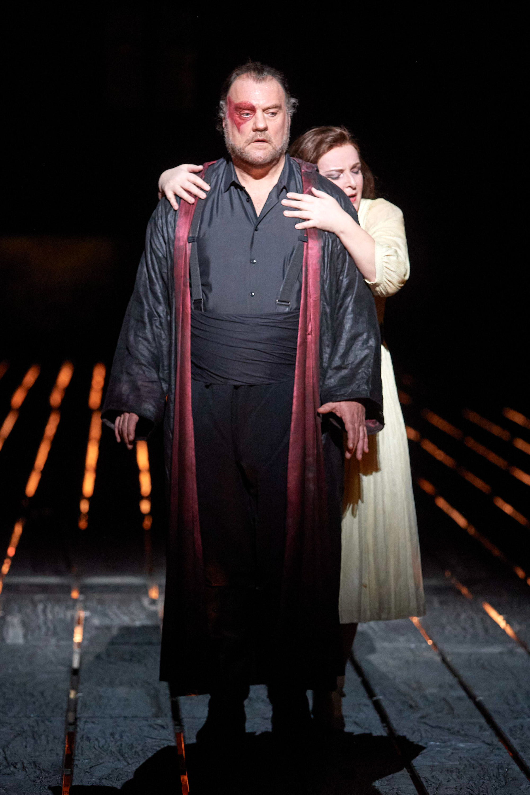

Elsa Álvarez

Viena. 22/4/26. Staatsoper. Wagner, Der fliegende Holländer. Bertrand de Billy, director. Tomasz Konieczny, Holandès. Erica Eloff, Senta. Franz-Josef Selig, Daland. Andreas Schager, Erik. Cor i orquestra de la Staatsoper de Viena.
Wagner és un dels meus tres compositors d’òpera de l’ànima —els altres dos són Mozart i Strauss. Tot i això, tinc moltes llacunes en el coneixement de la seva música. Arran dels meus viatges a la recerca de Thielemann, els darrers anys he vist dues vegades Der Ring des Nibelungen, Tristan und Isolde, i tres vegades Lohengrin. També he vist dues vegades Parsifal, tot i que no dirigit per Thielemann. La qüestió és que la resta d’òperes wagnerianes no les conec tan bé. Aquest és el cas de Der fliegende Holländer, que, he de confessar-ho, abans d’anar-la a veure a la Staatsoper de Viena, no sabia que, malgrat que consta de tres actes, la música va tota seguida. I que el mateix Wagner més endavant va fer els talls musicals pertinents perquè els actes tinguessin una conclusió musical. Però a Viena —i m’imagino que en totes les regions germanòfones—, es fa la versió original, que dura dues hores i un quart.
He fer una segona confessió, i és que el motiu principal que em va impulsar a venir a veure aquest holandès el dia 22 d’abril de 2026 va ser la presència de Tomasz Konieczny com a Holandès. Vaig veure’l per primer cop a Viena fent el Jokanaan de Salome, i allà vaig veure el remolí de força incontrolada que és aquest baríton, impressió que vaig corroborar fa tres mesos al Liceu, quan va fer el petit paper de Kurwenal a Tristan und Isolde. Ara, per fi, l’he vist en un paper protagonista. Konieczny és el baríton total: veu imponent, atronadora, amb capacitat de ser bruta o fina, amb un control ferri del gruix, amb registre greu i agut perfectament suficients, amb imponència escènica, tant vocalment com físicament. Penso en Konieczny com un totterreny que tant podria fer Figaro, Iago, Scarpia, Wotan o l’Holandès. M’hauria quedat a Viena a veure les quatre funcions de Der fliegende Holländer, per l’òpera i per ell.
Erica Eloff no m’ha causat la mateixa impressió. És una soprano d’una tècnica molt sòlida i d’una veu càlida i expressiva, però m’ha semblat que el paper de Senta li venia gran. Al final del tercer acte ha cantat amb més desimboltura i la veu ha sonat més eixamplada, però fins aleshores els aguts han sonat estrets, i en el duo del segon acte amb el baríton, Konieczny segurament ha hagut d’aminorar la veu perquè ella es pogués sentir. Eloff ha estat molt expressiva, sí, però, no sé si per una percepció subjectiva, jo m’imagino Senta amb la veu d’una Sieglinde, i no d’una Elsa. Penso en la magnífica Vida Mikneviciuté, que vaig veure precisament fent de Sieglinde amb Thielemann, i no puc evitar pensar en ella com a Senta.
Franz-Josef Selig sempre és una aposta segura. És un baix de veu sòlida i potent que resol amb comoditat i eficiència qualsevol paper que li posen al davant. L’he vist en repertoris tan diferents com Händel, Mozart i Wagner, i ha excel·lit en tots. Com a Daland ha estat impressionant, tot i que al costat de Konieczny costa molt brillar amb llum pròpia. Andreas Schager ha tingut un petit contratemps. Com a Erik em sembla una mica excessiu tenir un cantant tan extraordinari, és com si restés protagonisme als protagonistes de debò. Ha fet el seu paper al segon acte amb el seu estil abrandat i apassionat, tot i que en un moment li he notat un petit rogall. Aquesta impressió s’ha confirmat certa al tercer acte, quan qui ha abordat el rol d’Erik ha estat Jörg Schneider, un tenor de timbre més líric, que m’ha semblat més adequat per al paper. Al final de tot ha sortit algú de l’administració a dir que Schager s’havia indisposat i que per això no havia pogut acabar l’òpera. Però a Viena en un tancar i obrir d’ulls poden fer venir els millors intèrprets del món a conveniència.
L’orquestra ha sonat meravellosament bé. Bertrand de Billy no ha fet la màgia que fa Thielemann, i en el tercer acte hi ha hagut un petit moment en què cor i orquestra s’han desacompassat, però en conjunt ha primat el ritme clar i precís, amb el lirisme propi d’aquesta òpera que té alguns tints de l’òpera italiana, però que també té algun germen del Tristan und Isolde. Cor i orquestra han exhibit un poder i una força descomunal però controlada i la música ha encarnat perfectament el mar embravit en una tempesta salvatge.
L’argument de Der fliegende Holländer és com un precedent del de Tristan und Isolde: la impossibilitat de l’amor a la terra. De fet, ja ho diu l’holandès al principi: “l’amor etern no existeix a la terra”. I té raó. I jo afegeixo: per sort. L’eternitat és la condemna a la qual està sotmès, a una vida errant a la qual només podrà posar fi quan el redimeixi l’amor fidel d’una dona. En psicologia moderna això no seria amor, sinó obsessió o dependència emocional. L’amor absolut com a ideal estètic romàntic és bell, però és impossible de reproduir a la realitat perquè els ideals són perfectes i les persones no. Per això Wagner ho converteix en poesia i música, i ho eleva de categoria.